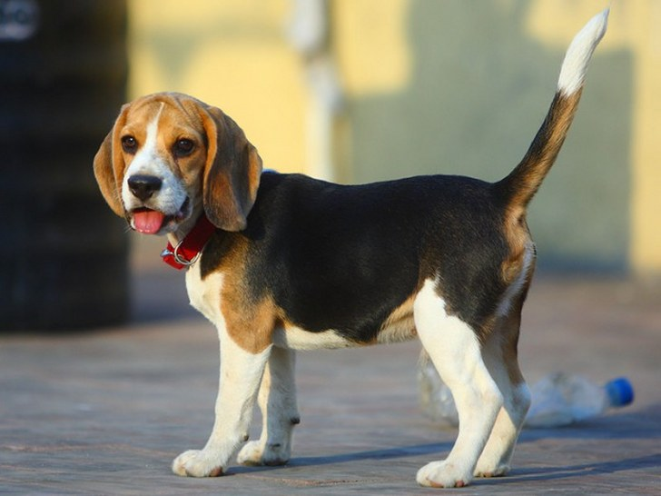

Пес сві́йський або сві́йський соба́ка (Canis lupus familiaris або Canis familiaris) — культигенна тварина. Термін застосовують як для домашніх, так і для бездомних тварин. Свійський пес був одним з найбільш широко застосовуваних службових та компанійських тварин протягом всієї історії людства.

За різними оцінками, одомашнення вовка відбулося від 100 000 до 15 000 років тому. mDNA тестування показує, що еволюційний розкол між собаками і вовками відбувся близько 100 000 років тому. Собака швидко став незамінним у всіх світових культурах та був дуже цінним у ранніх людських поселеннях. Зокрема вважають, що успішна еміграція через Берингову протоку могла б бути неможливою без їздових собак. Собаки виконують багато видів робіт для людей, таких як полювання, охорона, служба в поліції та військах, а також собаки допомагають пасти стада худоби, допомагають інвалідам та служать компанійськими сімейними собаками. Ця універсальність, більша ніж практично в будь-якої іншої відомої людству тварини, дала собаці прізвисько «найкращий друг людини». За підрахунками, на планеті на 2015 рік проживало близько 525 мільйонів собак[1].
Завдяки селекції, було розведено сотні різноманітних порід, та зараз виявляють більше поведінкових та морфологічних відмінностей між собаками різних порід, ніж у будь-яких інших наземних ссавців. Наприклад, висота в холці може варіювати від кількох сантиметрів (чихуахуа) до майже метра (ірландський вольфгаунд, великий данець); забарвлення — від білого до чорного, включаючи світло-жовте, сіре, коричневе з великим розмаїттям відтінків.